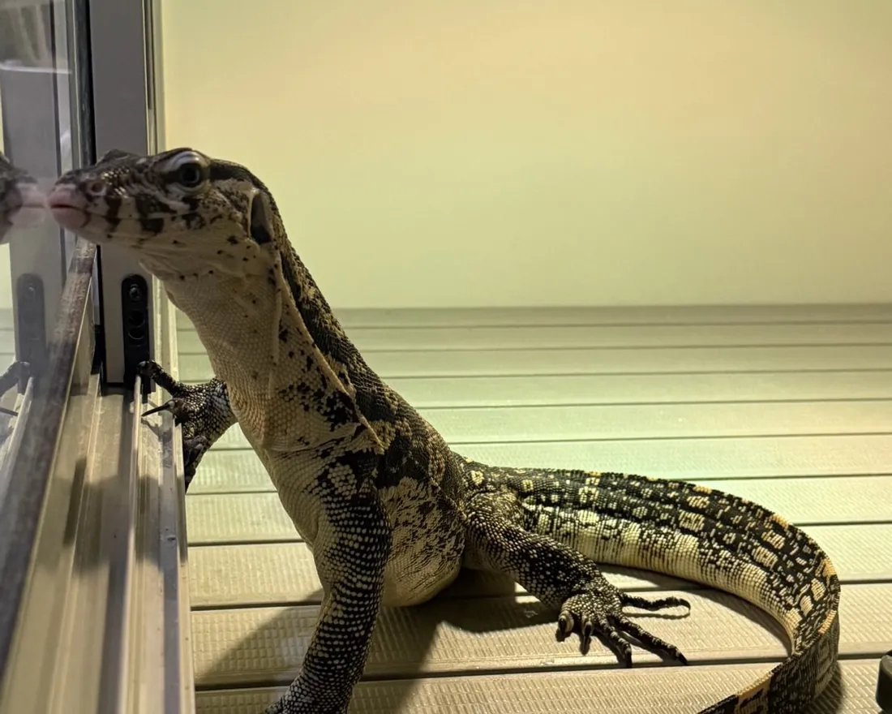
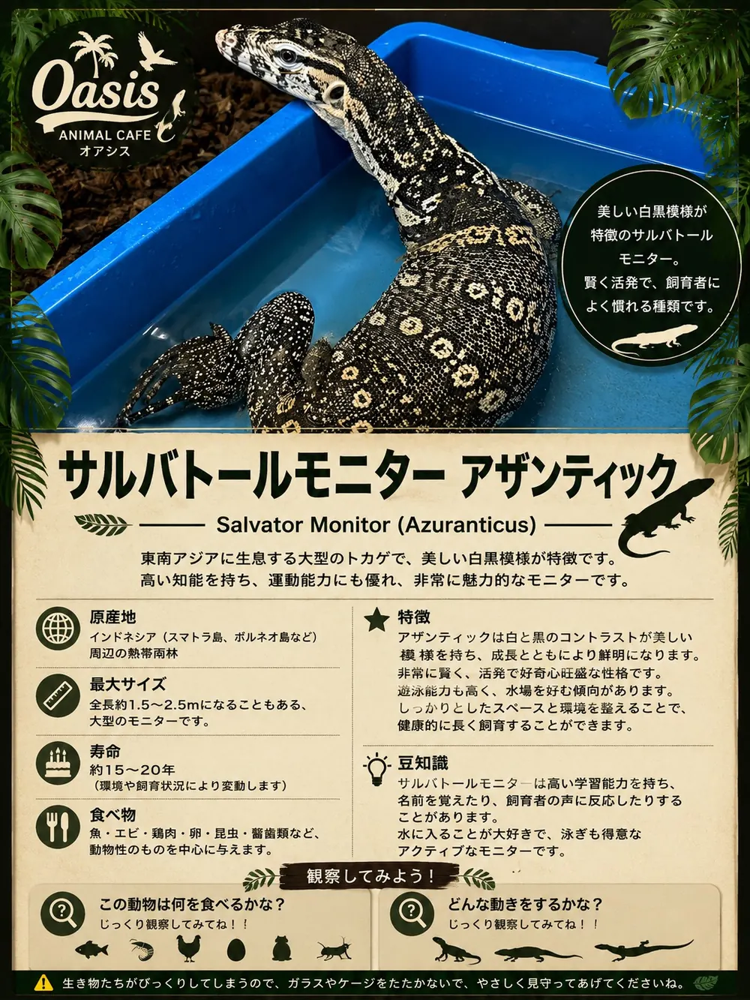

REPTILE
サルバトールモニター アザンティック
Salvator Monitor (Azuranticus)
東南アジアに生息する大型のトカゲで、美しい白黒模様が特徴です。高い知能を持ち、運動能力にも優れ、非常に魅力的なモニターです。
原産地インドネシア（スマトラ島、ボルネオ島など）周辺の熱帯雨林
大きさ全長 約1.5〜2.5m になることもある、大型のモニターです
寿命約15〜20年（環境や飼育状況により変動します）
食べ物魚・エビ・鶏肉・卵・昆虫・齧歯類など、動物性のものを中心に与えます。
店内POPカード

美しい白黒模様が特徴のサルバトールモニター。賢く活発で、飼育者によく慣れる種類です。
特徴
アザンティックは白と黒のコントラストが美しい模様を持ち、成長とともにより鮮明になります。非常に賢く、活発で好奇心旺盛な性格です。遊泳能力も高く、水場を好む傾向があります。しっかりとしたスペースと環境を整えることで、健康的に長く飼育することができます。
豆知識
サルバトールモニターは高い学習能力を持ち、名前を覚えたり、飼育者の声に反応したりすることがあります。水に入ることが大好きで、泳ぎも得意なアクティブなモニターです。